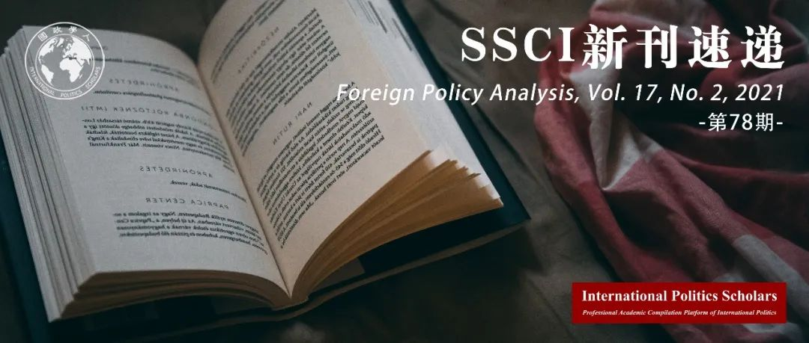

收录于合集 #新刊速递 123个

期刊简介
《外交政策分析》（Foreign Policy Analysis）杂志是由牛津大学出版社代表国际研究协会出版的季刊。该期刊旨在以比较或具体案例的方式研究外交政策决策的过程、效果、原因或结果。根据Journal Citation Reports显示，2019年该刊的影响因子为1.329。
本期编委
【编译】 江若婵 胡瑞琨 赵怡雯 常佳艺 廖泽玉
【校审】 常佳艺 赵怡雯 胡瑞琨 廖泽玉 江若婵
【排版】 董诗
【美编】 游钜家

本期目录
1. 精英的变化以及土耳其-以色列联盟的成立，存续与消亡
Elite Change and the Inception, Duration, and Demise of the Turkish–Israeli Alliance
2. 关于国际法院的群众态度分析
Analyzing Mass Attitudes Toward the International Court of Justice
3. 中国的“大国外交”：合法化与外交政策的变化
China’s “Major Country Diplomacy”: Legitimation and Foreign Policy Change
4. 外交缓和的国内根源：冷战期间的国家-社会关系与外交政策的变化
The Domestic Sources of Détente: State–Society Relations and Foreign Policy Change during the Cold War
5. 新古典现实主义理论、干预变量与范式边界
Neoclassical Realist Theories, Intervening Variables, and Paradigmatic Boundaries
01
精英的变化以及土耳其-以色列联盟的成立，存续与消亡
【题目】 Elite Change and the Inception, Duration, and Demise of the Turkish- Israeli Alliance
【作者】 Ersel Aydinli，毕尔肯大学国际关系学者；Onur Erpul, 外交政策与和平研究中心博士后研究员。
【摘要】 本文研究了土耳其- 以色列联盟（1996-2011）的出现以及其令人费解的终止。尽管一系列的研究用不断变化的物质环境，土耳其正义与发展党(AKP)的保守议程，以及其他外在因素来解释这一问题，但这些都未能捕捉到情况的复杂性。与此前的文章不同，本文采用修正后的新古典现实主义分析框架，从纵向上重新审视联盟。具体来说，在联盟成立和瓦解的过程中，土耳其的精英决策者都没有遇到明显的外部威胁，可以自由地奉行自己偏好的外交政策。然而在国内，土耳其的精英结构是决定性的。在20世纪90年代，旧时的精英利用其体制力量，以同以色列的联盟为借口，来约束新兴的精英。十年后，新的精英夺取了体制权力。这些精英们不再受制于国内，也没有外部敌人，于是将以色列视为进一步赢得国内支持的威胁，但这造成了一系列事件，使得联盟终止。总体而言，本文得出结论，在宽松的国际环境和精英引发的国内冲突的交汇处，联盟政策可能会变得不稳定。
This article investigates the emergence and puzzling termination of the Turkish–Israeli alliance (1996–2011). While a litany of studies has offered changing material circumstances, the conservative agenda of Turkey’s AKP government, and other exogenous factors as possible explanations, these fail to capture the complexity of the situation. Instead, this article applies a modified neoclassical realist framework of analysis that longitudinally recontextualizes the alliance. Specifically, in both its inception and collapse, Turkey’s elite decision-makers faced no apparent external threats and were free to pursue their favoured foreign policy. Domestically, however, Turkey’s elite structure was decisive. In the 1990s, the old elite used their institutional power to restrain emerging elites and used their alliance with Israel as a pretext to do so. A decade later, a new elite seized institutional power. No longer restrained domestically, and absent external enemies, the new elites targeted Israel as a menace to win further domestic support, but this eventuated in a series of events that led to the termination of the alliance. Overall, the article concludes that alliance policy can become erratic at the intersection of permissive international environments and elite-induced domestic conflicts.
【编译】 江若婵
【校对】 赵怡雯
【审核】 廖泽玉
02
关于国际法院的群众态度分析
【题目】 Analyzing Mass Attitudes Towards the International Court of Justice
【作者】 Florian Justwan，爱达荷大学政治科学副教授；Sarah K Fisher，埃默里亨利学院政治学副教授；Ashley Kerr，爱达荷大学西班牙与拉美研究副教授；Jeffrey D Berejikian，佐治亚大学国际事务研究副教授。
【摘要】 本文研究了公众对于国际法院的态度，并致力于探讨两个问题：（1）为什么有些人会支持/反对将本国的争端问题提交到国际法院？（2）如何解释公众对于代价高昂的国际法院裁决的不同程度的支持。本文认为，个人层面对两个问题的态度都是由不同的心理所驱动的。尽管成本收益计算与世界社会认同在两种情况下都会影响态度，但人们对遵约的态度同样受到社会主导倾向（social dominance orientation , SDO）水平的影响。本研究基于2019年4月在伯利兹收集原始调查数据进行统计分析。研究得出三点主要发现：一、人们对国际法院裁决成本的既定看法切实影响了对裁决的态度。如预测的那样，较高的预期成本导致对该裁决的支持减少。二、世界主义与对裁决的支持力度呈正相关，但对公众遵守国际法院裁决的态度没有影响。三、社会主导倾向水平较高的受访者不太愿意支持执行昂贵的国际法院裁决。然而，社会主导倾向仅仅减少了那些具有狭窄社会身份依赖的个人对遵约的支持。
This paper analyzes public attitudes about the International Court of Justice (ICJ). We explore two questions: (1) Why are some people in favor of submitting their country’s disputes to the ICJ while others are opposed? (2) How can we explain variations in public support for compliance with a costly ICJ ruling? We argue that individual-level attitudes about both issues are driven by different psychological dynamics. While we expect that cost–benefit calculations and cosmopolitan social identity will affect attitudes in both contexts, people’s views on compliance should also be shaped by their level of social dominance orientation (SDO). Our statistical analysis is based on original survey data, collected in Belize in April 2019. We obtain three main findings. First, people’s ex ante beliefs about the costs of an ICJ ruling have tangible effects on attitudes toward ICJ adjudication. As predicted, higher expected costs lead to decreased support for adjudication. Second, cosmopolitanism is positively associated with support for adjudication, but it has no effect on attitudes about compliance with international court rulings. Third, high-SDO respondents are less likely to favor the implementation of a costly ICJ verdict. However, SDO only reduces support for compliance in individuals with narrow social identity attachments.
【编译】 胡瑞琨
【校对】 江若婵
【审核】 赵怡雯
03
中国的“大国外交”： 合法化与外交政策的变化
【题目】 China’s “Major Country Diplomacy”: Legitimation and Foreign Policy Change
【作者】 Stephen N Smith，加拿大卡尔顿大学政治学系博士研究生。
【摘要】 本文探讨了中国官方的“中国特色大国外交”政治理念。作者认为，2012年以来，国家行为的合法性边界急剧扩展。在帕特里克·杰克逊（Patrick Jackson）的交易性社会建构主义基础上，作者将解释中国新近获得的自信心的因果机制应用于解释中国精英们将中国的全球政治角色合法化的方式的转型中。作者利用2013至2019年期间政治家演讲、党的文件和相关中文文献，展示了新的合法化战略是如何被运用以证明中国积极改造国际秩序、与西方进行意识形态竞争、并根据其增强的权力和提升的地位在全球事务中承担更大责任的努力是正当的。这种新话语体系所认可的行动边界可能会在中短期内持续存在，并对亚洲及其他地区的区域秩序产生影响。
This paper probes China’s official political concept of “Major Country Diplomacy with Chinese Characteristics” to argue that the boundaries of legitimate state action have been dramatically expanded since 2012. Building on Patrick Jackson’s transactional social constructivism, I place the causal mechanism in China’s new assertiveness in seminal changes to how Chinese elites legitimize their country’s role in global politics. Drawing upon elite speeches, Party documents, and Chinese-language scholarship between 2013 and 2019, I show how new legitimation strategies are used to justify China’s effort to proactively reform international order, engage in ideological competition with the West, and assume greater responsibility for global affairs in accordance with its elevated power and status. The boundaries of action sanctioned by this new discourse are likely to persist in the short to medium term, with implications for regional order in Asia and beyond.
【编译】 赵怡雯
【校对】 胡瑞琨
【审核】 常佳艺
04
外交缓和的国内根源：
冷战期间的国家-社会关系与外交政策的变化
【题目】 The Domestic Sources of Détente: State–Society Relations and Foreign Policy Change during the Cold War
【作者】 Angelos Chryssogelos，伦敦都会大学政治与国际关系学讲师；Benjamin Martill，爱丁堡大学政治与国际关系学讲师。
【摘要】 关于外交政策变革的研究表明，领导人在内部和外部机会结构允许的情况下，会寻求调整本国的外交关系。然而，一些实现变革的突出努力都发生在国内局势极为动荡和国际约束严格的时期。为理解其原因，本文考察了冷战时期三个著名的外交政策变革案例，重点考察了法国的戴高乐、加拿大的约翰·G·迪芬贝克和西德的维利·勃兰特执政期间的对外关系。这些案例表明，国内动荡和外交政策变革紧密交织在一起，而实现大规模战略变革的努力是为了在不付出国内改革成本的同时，回应国内边缘化选民的需求。作者的分析表明，国际形势变化的关键在于国内整合战略的变动，而非重大的原则性外交政策的变化。
Research on foreign policy change claims leaders seek to restructure their country’s foreign relations when internal and external opportunity structures are permissive. However, a number of prominent efforts at achieving change have occurred during times of considerable domestic upheaval and rigid international constraints. To understand why, this article examines three well-known cases of Cold War foreign policy change, focusing on the external relations of Charles de Gaulle in France, John G. Diefenbaker in Canada, and Willy Brandt in West Germany. These cases suggest that domestic upheaval and foreign policy change were inextricably interwoven and that efforts to effect strategic change on a grand scale were motivated by a desire to respond to the demands of marginalized domestic constituencies without incurring the costs of domestic reform. Our analysis suggests key moments of international change are best understood as domestic incorporation strategies rather than instances of significant and principled foreign policy change.
【编译】 常佳艺
【校对】 廖泽玉
【审核】 胡瑞琨
05
新古典现实主义理论、干预变量与范式边界
【题目】 Neoclassical Realist Theories, Intervening Variables, and Paradigmatic Boundaries
【作者】 Elias Götz，瑞典乌普萨拉大学俄罗斯与欧亚研究所研究员。
【摘要】 新古典现实主义学派已经界定了一系列现实世界的要素（例如：国家实力、利益集团压力、战略文化、领导人性格等）。这些要素是系统性需求和国家对外政策行为之间的干预变量。尽管有这些详尽阐述，干预变量的概念仍不甚明了。作者在本文中指出，新古典现实主义学者将三种不同类型的因果因素归纳在干预变量这个标签之下，即：（1）缓和因素，（2）补充因素，以及（3）主要原因。将这三个要素明确区分开来，可以使学者提高利用新古典现实主义路径分析问题的精确性，运用适当的研究设计进行检验，从而更为明确地界定新古典现实主义与其他观点的范式边界。
Extant neoclassical realist scholarship has identified a range of real-world factors (e.g., state capacity, interest group pressure, strategic culture, and leadership personality) that serve as intervening variables between systemic imperatives and states’ foreign policy behavior. Despite these elaborations, the intervening variable concept remains underdeveloped. In this article, I show that neoclassical realists have lumped together three different types of causal factors under the label intervening variable: (1) moderating factors, (2) complementary factors, and (3) primary causes. Making these distinctions explicit will enable scholars to increase the analytical precision of neoclassical realist approaches, choose appropriate research designs to test them, and define more clearly the paradigmatic boundaries of neoclassical realism vis-à-vis other perspectives.
【编译】 廖泽玉
【校对】 常佳艺
【审核】 江若婵
好好学习，天天“在看”
国政学人
支持学术公益与知识传播
微信扫一扫赞赏作者 __赞赏
已喜欢，对作者说句悄悄话
取消 __
发送给作者
发送
最多40字，当前共字
上一页 1/3 下一页
长按二维码向我转账
支持学术公益与知识传播
受苹果公司新规定影响，微信 iOS 版的赞赏功能被关闭，可通过二维码转账支持公众号。